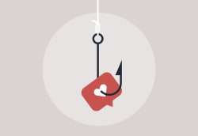

How to Date Without Apps: 10 Effective Ways to Meet People in Rea...
Feeling fed up with dating apps and their endless swiping and privacy issues? In my experience as a love coach, I'd say you should consider the sim...
Dec. 15, 2025
10 Great Online Dating Profile Examples to Copy and Paste
Not sure what to write on your dating profile? Don't worry—with a few simple tips, you can create a profile that feels authentic and attracts the r...
Dec. 15, 2025
10 Signs You’re in a Situationship and How to Deal With It
New relationships are tricky enough. But recently, situationships have entered the dating sphere. Instead of being in a committed relationship or s...
Dec. 09, 2025

What Is No-Strings-Attached (NSA) Dating and Is It Right for You?
No-Strings-Attached (NSA) dating builds a sense of freedom while still experiencing intimacy.
Dec. 09, 2025

10 Things 50 Year Old Men Want in a Relationship
As you get older, your priorities change, and you may want something different in a relationship than you did when you were younger. For instance, ...
Dec. 09, 2025

10 Facts Every Swinger Wish They Knew Before They Became Swingers
Many people today are curious about how to start swinging and become a swinger—someone in a relationship who consensually has sex with other people.
Dec. 09, 2025

10 Notable Green Flags in the Talking Stage
The talking stage can be exciting. There are so many possibilities, but it can also end up being a waste of time. What if, after all that texting, ...
Dec. 09, 2025
How to Find the Perfect Unicorn For Your Marriage
With non-monogamous relationships on the rise, many married couples are beginning to look for ways to find a third. One word for this kind of third...
Dec. 09, 2025

Dating Apps Like Bumble: 5 Alternatives to Try Instead (2026)
People often think of Bumble as the best dating app to make lasting connections, compared to apps like Tinder which may be used more for short-term...
Dec. 09, 2025

things older women look for in a man
Gone are the days when dating was reserved for the young or when women were expected to only date men their age or older.
Dec. 09, 2025

Top 5 Best Tinder Alternatives 2026: Similar Dating Apps You Shou...
Tinder might be one of the first apps that comes to mind when you think of online dating, but it's definitely not your only option.
Dec. 09, 2025

10 Important Things to Consider Before Using Tinder as a Couple
Non-monogamous people don't have lots of dating apps to choose from. That's why most of the major dating apps are also used by couples who are look...
Dec. 09, 2025

The Science Behind Pick-Up Lines: Here's Why They Work
You often hear about people using pick-up lines in bars or other social settings, but what are pick-up lines? In their most basic form, pick-up lin...
Dec. 09, 2025

10 Reasons Why Younger Guys Like Older Women
Older women are embracing relationships with younger men, stepping beyond the "cougar" label with confidence, clear desires, and rich life experien...
Dec. 09, 2025

Grindr Alternatives: 5 Similar Dating Apps for Gay Men
Grindr is the world's largest and most popular location-based gay online dating app. It provides a safe space for gay, bi, trans, and queer people ...
Dec. 09, 2025

Top 10 Best Dating Sites for Singles Over 40
Finding love in your 40s can be an exciting and rewarding experience, but it's not always easy to know where to start.
Dec. 09, 2025

Dating a Taurus Man: 10 Things You Need to Know
The strong, silent Taurus man hides a passionate romantic behind his grounded exterior. If you want to date the charming bull—you'll need to uncove...
Dec. 09, 2025

10 Ways to Spoil your Boyfriend in a Long Distance Relationship
If you've been googling "how to surprise boyfriend long distance," look no further than these 10 suggestions for letting your boyfriend know how ap...
Dec. 09, 2025

How Understanding Love Languages Can Transform Your Relationship
Understanding your partner's love languages can make them feel seen, understood, and validated. And you'll reap the benefits, too.
Dec. 09, 2025

Dating a Bisexual Woman: How to Navigate Bi Relationships With Un...
Dating a bi woman can come with unexpected challenges and rewards. Keep an open mind, communicate effectively, and embrace the complexity of human ...
Dec. 09, 2025

Jena Malone and 9 Other Celebrities Who Came Out as Pansexual
Lots of celebrities identify as pansexual, meaning that they're attracted to people of all gender identities. Besides Jena Malone, celebrities like...
Dec. 09, 2025

10 Key Steps to Managing Interfaith Relationship Difficulties
There are a lot of ways to overcome emotional challenges while keeping one's original faith. Spending time working on these issues at the beginning...
Dec. 09, 2025
Single Parent Dating: How to Reenter the Dating Scene
Single parents often ask me if it's possible to date again after having kids while balancing careers, emotions, and personal responsibilities. The ...
Dec. 09, 2025

Top 10 Best Dating Sites for Professionals
For busy professionals with demanding careers and hectic schedules, finding time for a flourishing romantic life can be challenging.
Dec. 09, 2025
How to Reject Someone Nicely Over Text: Examples
In my experience as a professional dating coach, I've seen that moving on from unrequited feelings is a difficult part of the dating experience. We...
Dec. 09, 2025

Is Online Dating Worth It? The Pros and Cons
Though online dating is one of the most dynamic and popular ways to meet your significant other today, there are a few things to keep in mind befor...
Dec. 09, 2025

Hinge Alternatives: 5 Similar Dating Apps You Should Try in 2026
Have you ever considered ways to increase your chance of finding love on dating websites? Finding a great match is easier when you have more options.
Dec. 09, 2025
10 Rules for Dating Modern Orthodox Jews
Orthodox Jews have a rich culture that includes many unique traditions and specific dating customs. In line with Orthodox Jews' interpretation of t...
Dec. 09, 2025

Gen Z Dating Culture Explained
Gen Z's dating culture is different. It's exposed us to new and useful ways to approach dating, while some are just re-worked versions of old custo...
Dec. 09, 2025
The 10 Most Misunderstood Polyamorous Celebrity Relationships
Most celebrity polyamorous relationships, like non-celebrity ones, are misunderstood to some degree. Celebrities are under more scrutiny than other...
Dec. 09, 2025

10 Tips for Successful Dating in NYC: Finding Love in the Big Apple
Here are 10 proven tips to help you become a more successful dater in NYC.
Dec. 09, 2025

10 Things I Learned Dating Outside of My Own Race
Interracial dating involves getting to know someone else's culture and developing specific sensitivities. It can present challenges when one person...
Dec. 09, 2025

Top 10 Best Latin Dating Sites & Apps in 2026: Find Latin Singles...
There are online dating sites and apps where traditions align, and heritage is the heartbeat of every match.
Dec. 09, 2025

Is Sober Dating for You? An Expert’s Guide to Dry Dating
As a relationship expert, I've witnessed firsthand the evolving dynamics of modern dating, especially in the context of alcohol and sobriety.
Dec. 09, 2025

Tips for Creating The Best Dating Profile As a Single Parent
Navigating dating as a single parent can be exciting but also challenging since you have to balance your own needs with the needs of your children.
Dec. 09, 2025

Navigating New Relationships and Valentine's Day: How Online Dati...
Facing the challenge of a new relationship as Valentine's Day approaches? I'm here to show you how online dating apps can help in these crucial ear...
Dec. 09, 2025

Dating As an Introvert: A Guide to Getting Out of Your Shell
Between the pressure to socialize and the expectation to constantly put themselves out there, dating can be challenging for introverts.
Dec. 09, 2025

10 Halal Dating Rules if You Want to Date Someone Muslim
So, you've fallen for someone Muslim? Your heart is full, but your mind is brimming with questions. What are the next steps?
Dec. 09, 2025

Dating an Asexual: Things to Know About Aces and Where to Match W...
Are you dating someone who's asexual or someone who shares your gender orientation?
Dec. 09, 2025
Questions to Make Every Minute Count in Speed Dating
Speed dating is a thrilling way to meet potential romantic interests, but how do you ensure meaningful connections in those fleeting minutes?
Dec. 09, 2025

How to Make Friends on a Dating App: The Complete Guide
Dating apps aren't just about finding romantic relationships anymore. They're also a viable way to form meaningful friendships.
Dec. 09, 2025

BeNaughty Alternatives: 5 Hookup Sites like BeNaughty in 2026
We've curated a list of the best BeNaughty alternatives for finding hookups without judgment. Because sometimes you're just looking for something c...
Dec. 09, 2025

Match Alternatives: 5 Best Online Dating Sites & Apps Like Match ...
If you work remotely like me and find it challenging to meet new people, Match may be the ideal place to start.
Dec. 09, 2025

What Is a Karmic Relationship? Everything You Need To Know
Have you been in a relationship that's both deeply connected and full of ups and downs? This could be a sign of a karmic relationship.
Dec. 09, 2025

Overcoming Dating Burnout: Strategies for Refreshing Your Online ...
Tired of the endless swipe? You're not alone. Online daters everywhere are experiencing dating burnout, and I've got some strategies on how to over...
Dec. 09, 2025
Dating Multiple People: Navigating Multi-Partner Dynamics
Are you interested in an open relationship where you can connect with different people? Well, you're not alone.
Dec. 09, 2025

What Is the Swipe Left/Right Mentality?
In the new age of modern romance, love finds its way through screens and swipes, creating a tapestry of digital connections.
Dec. 09, 2025

eharmony Alternatives: Top Dating Sites & Apps to Try in 2026
eharmony has long stood as a beacon for individuals seeking meaningful relationships. However, it's not the perfect fit for everyone, and the year ...
Dec. 09, 2025

Badoo Alternatives: 5 Casual Dating Sites & Apps to Try in 2026
Badoo has long been a go-to platform for those seeking casual connections. However, as 2024 unfolds, a new wave of dating apps and sites are emergi...
Dec. 09, 2025

Top 10 Online Dating Trends of 2026
Sick of swiping and scrolling but still seeking your soulmate? The latest online dating trends are changing the game when it comes to making meanin...
Dec. 09, 2025

Dating a Single Dad? 10 Clear Signs He's Fully Committed To You (...
Dating a single dad can be both exciting and challenging. With his children being his top priority, he won't have all the time in the world to spen...
Dec. 09, 2025

Older Men Dating Younger Women: Is Age Just a Number?
You may have considered dating someone significantly older or younger than yourself. An age-gap relationship can be appealing but comes with its ow...
Dec. 09, 2025
How Dating a Narcissist Changes You: 10 Real-Life Stories
Has the constant anxiety from a past relationship reshaped how you view love? That lingering shadow may be the mark of dating a narcissist.
Dec. 09, 2025

Understanding Relationship Age Gaps: Guidelines and Considerations
Navigating relationships with significant age gaps—a topic often mired in stereotypes and misconceptions—isn't easy. But I think you'll find it's m...
Dec. 09, 2025

How to Have a Successful First Date on Video Chat
Dating is tough. It's often a time-consuming and expensive journey to find that special connection. That's where video chat dating comes in—your ne...
Dec. 09, 2025

10 Warning Signs Your Relationship Is Already Over According to a...
As a certified sex coach, I've met many couples who didn't realize their relationship was in trouble. They often argued, showed little interest in ...
Dec. 09, 2025
10 Lesser-Known Uses for Dating Apps
It can be difficult to find that special someone in real life and on dating apps alike, but you might be missing out on something else without real...
Dec. 09, 2025

Embracing Love After 50: A Guide for Mature Women Entering the Da...
It's time to step back into the game of dating. As a mature woman, you're armed with a wealth of life experiences, making this a uniquely exciting ...
Dec. 09, 2025

Dating Age Range: Insights into Relationships With Significant Ag...
Would you date someone significantly older or younger than you? And how much does age really matter when it comes to love?
Dec. 09, 2025
The Role of Astrology in Dating: How Zodiac Signs Influence Our L...
I've seen it countless times—how the stars play cupid, guiding hearts toward deeper compatibility. Whether it's the fiery passion of Aries meeting ...
Dec. 09, 2025

Errand Dating: Combining Daily Tasks With Romance
It's time to trade candlelit dinners and sunset picnics for a romantic stroll in the fresh produce section.
Dec. 09, 2025

Is Religion Worth Breaking Up With Someone You Love? 10 Things to...
Religion can be a deeply personal aspect of our lives, influencing our values, traditions, and day-to-day habits. But should it make or break your ...
Dec. 09, 2025

How Attachment Styles Affect Relationships
We often hear about compatibility in relationships, but have you ever considered compatibility in attachment styles?
Dec. 09, 2025

We Asked Men: 10 Subtle Things That Turn Them On
You might think men are turned on primarily by physical attributes, but we found that they deserve more credit than that. Their turn-ons are much m...
Dec. 09, 2025
Top 10 Ways to Get Out of a Bad Date
At some point in your life, you're bound to end up on some awkward or downright painful dates. Getting out of a bad date can be tricky, but you sho...
Dec. 09, 2025

10 Signs You're Not Ready for a Relationship
Many of us love to daydream about the special moments we could share with the love of our life when, in reality, we're not in a place to be in a re...
Dec. 09, 2025
10 Must-Know Red Flags When Dating a Divorced Woman
Divorced women can make great partners. After all, they've had the experience of being married and know what works and what doesn't.
Dec. 09, 2025

10 Most Compatible Personality Type Pairings According to Myers-B...
It can be useful to know if you may be compatible with someone in advance. The Myers-Briggs personality type assessment provides lots of informatio...
Dec. 09, 2025

10 Tips for Dating in Los Angeles: Finding Love in the City of An...
Under the Hollywood lights, I discovered a truth that's as candid as the golden sunsets painting the city—dating in LA sucks.
Dec. 09, 2025

10 Ways to Meet Your Celeb Crush Online
People have celebrity crushes all the time without even attempting to actualize them. But what if you could actually meet and even date your celebr...
Dec. 09, 2025
10 Surprising Benefits of Dating Your Best Friend
The best-friends-to-lover arc can contribute to a strong and fulfilling romantic connection—and I've seen it work first-hand.
Dec. 09, 2025

How to Spot Catfishes While Online Dating
Getting fooled online is actually much easier than you might think.
Dec. 09, 2025
10 Tips for Successful Dating in Miami: Finding Love in the Magic...
Expansive and diverse, Miami has plenty of potential for finding your match. But people tend to say it's tough to date in Miami.
Dec. 09, 2025

10 Signs Your Casual Relationship Is Getting Serious
Before becoming official with someone, you'll need to have a conversation about what each of you is looking for. Before that conversation, it can b...
Dec. 09, 2025

10 Interesting Reasons Why Guys Disappear When They Like You
Conventional wisdom leads us to assume a guy probably isn't interested in you if he backs off and disappears. But things aren't always that simple....
Dec. 09, 2025

Esther Perel on Cheating: 10 Ways to Trust Your Partner After Inf...
Esther Perel is a psychotherapist who is an expert in sex and relationships. She has written several books and teaches these subjects to small grou...
Dec. 09, 2025

Top Signs Your Partner Wants an Open Relationship
There are many signs that suggest a partner may want to change a monogamous relationship to a non-monogamous or open one. People may find it very d...
Dec. 09, 2025

10 Seductive Ways to Flirt with Your Gay Partner via Text
Whether you've met someone on a dating app or in real life, texting will probably be a big part of your early courtship. Even well into a relations...
Dec. 09, 2025

10 Tips for Dating in Your 40s: Expert Guide to Successful Dating
Navigating dating in your 40s can be daunting, making you wonder about any changes to dating rules, such as prioritizing compatibility.
Dec. 09, 2025

Top 5 Best Dating Apps & Sites Like Plenty of Fish POF in 2026
Plenty of Fish is a popular dating app with millions of users, but there are better options—especially for mature singles. Here are a few other sit...
Dec. 09, 2025
Top 5 Alternatives to Zoosk for Long-Term Relationships
With over 40 million active users across 80 countries, Zoosk is one of the world's biggest dating apps, but it may not be the perfect fit for every...
Dec. 09, 2025

First Dates on Valentine's Day: 10 Real Stories
A first date is exciting, holding promises of future dates. Anxiety mixed with excitement, even now, 46 years after my first ever first date.
Dec. 09, 2025

Celebrate Singles Awareness Day: 10 Stories About Treating Yourself
On the 15th of February, we'll celebrate Single Awareness Day. An unofficial holiday that's all about love—but not the romantic kind. This Single A...
Dec. 09, 2025

OkCupid Alternatives: Our Top Picks for Dating Sites & Apps in 2026
OkCupid is a dating app that uses personality tests to suggest compatible matches for different genders and relationship styles. But is it right fo...
Dec. 09, 2025

Infla-Dating: The Top Dating Trend in 2026 for Thrifty Singles
Cost-conscious, thrifty singles are infla-dating as a way to save money while still having fun.
Dec. 09, 2025

10 Worst Date Stories Found on Reddit That'll Make You Facepalm
Ever had a terrible dating experience? A recent Reddit thread will help reassure you that you're in good company.
Dec. 09, 2025
Christian Mingle Alternatives: Top 5 Alternatives for Christians ...
With over 15 million users, Christian Mingle is known for helping Christian singles find meaningful, lifelong connections with people who share sim...
Dec. 09, 2025

10 Ways Hardballing Can Improve Your Online Dating Experience
People who practice hardballing are clear about their expectations for their potential partner and the relationship from the beginning of their dat...
Dec. 09, 2025

Relationship Stages That Most Couples Will Go Through
The exciting thing about being in a relationship is that it probably won't be the same in a year or even a month from today because relationships e...
Dec. 09, 2025

10 Questions to Ask Yourself Before Giving Someone an Ultimatum
When you’re dating someone who isn’t living up to your expectations, it’s common to want to let them know that there will be consequences if they d...
Dec. 09, 2025

10 Signs You Might Be “Groundhogging” and How to Stop
Do you ever get that feeling of déjà vu in relationships, where your current partner has the same personality, look, and issues as your last partne...
Dec. 09, 2025

New Dating Pandemic: How Hesidating Originated From COVID-19
Hesidating is described as feeling uncertain about dating and relationships because everything in life feels so uncertain. During the first part of...
Dec. 09, 2025
10 Things Pansexuals Need to Know Before Coming Out
Coming out can be difficult. And it can be even more challenging when your identity isn't well-known or adequately understood. Coming out to friend...
Dec. 09, 2025

10 Affairs Discovered in the Most Astonishing Ways (And a Dating ...
Chances are you've probably been cheated on before. And you can still remember exactly how you found your partner out. If you have a "I accidentall...
Dec. 09, 2025

10 Ways to Overcome Social Anxiety During Online Dating (Accordin...
Anxiety about dating is common. Online dating brings its own anxieties. These are an outgrowth of the social anxiety people can experience when hav...
Dec. 09, 2025

Professional Black Matchmakers Teach Us 10 Things About Interraci...
In 1967, the Supreme Court of the United States overturned the laws that prevented people from having interracial relationships. Though these relat...
Dec. 09, 2025

10 Things You Can Do For Free on Dating Sites Without a Subscription
Dating sites often push subscriptions, suggesting that you won't find a match without the paid features. However, there are lots of things you can ...
Dec. 09, 2025

10 Challenges LGBTQ+ Asians Face When Coming Out
The LGBTQ+ community is diverse and includes many different races and ethnicities. People with different intersecting identities face their own uni...
Dec. 09, 2025
10 Open Relationship Rules Will & Jada Wish They Knew Before Cros...
Will Smith confirmed last year that he and his wife, Jada Pinkett Smith, were in an open relationship. This came after rumors were going around tha...
Dec. 09, 2025
Polyamorous Relationships: 10 Rules You Won't Know Until You're I...
Growing up, most of us learn that being in a relationship means being romantically and sexually exclusive with one person, this is simply not true.
Dec. 09, 2025

10 Ways to Diagnose If You're Polyamorous or Monogamish
Besides being polyamorous or monogamish, there are many ways to be non-monogamous. However, this article is geared toward figuring out which of the...
Dec. 09, 2025

Dating on a Budget? 10 Ways to Save Money on Date Night
The cost of dating can add up quickly, and finding cheaper options can be a way to get creative and try new things.
Dec. 09, 2025
10 Lovely Solo Date Ideas
If you've been single for a long time, it might be frustrating to find yourself spending yet another Friday night alone. But the grass isn't always...
Dec. 09, 2025

10 Must-Know Rules for Dating Younger Guys
If you look at celebrity relationships or the people you see out and about, you'll probably see a lot of older men dating younger women. But the re...
Dec. 09, 2025

What to Know About Dating in Your 30s
A lot of things change once you reach your 30s, and our love lives reflect that. Dating in your 30s is somewhat different from dating in your 20s. ...
Dec. 09, 2025
Dating vs. Relationships: Which Is Right for You?
Many people think of dating and relationships as synonymous, but there is a difference between dating and being in a relationship. If you can figur...
Dec. 09, 2025
10 Ways to Date Yourself in the Name of Self Love
It's a cliché that you need to love yourself before you can truly love someone else, but there is some truth to it. One way to practice self-love i...
Dec. 09, 2025

What is a Unicorn in Dating? 10 Things to Know Before You Try It
Couples are often curious about adding another person to spice up their sex life. But people who are willing to join a couple are unusual and can b...
Dec. 04, 2025
40% of People Would Consider Dating an AI Partner, Survey Says
To find out exactly how people feel about AI influencing their dating journey, we recently surveyed over one thousand adults about the idea. The re...
Dec. 01, 2025
3 Dating Hacks to Stop the Endless Swiping
Diving into online dating? Say goodbye to swiping fatigue and shallow chats. Discover 3 hacks for authentic, meaningful connections in your digital...
Dec. 01, 2025
New to Online Dating? Here’s What to Expect When Matched With a S...
Online dating is like entering an alternate reality! You never know who you might match with, and often it will be people that you wouldn’t meet in...
Dec. 01, 2025
3 Best Dating Sites for Singles Trying to Beat the Cold Weather B...
Do you dread the cold weather? Does it make you feel down and lonely? If you’re looking for a companion to help brace the chill with this winter, o...
Dec. 01, 2025
How Background Checks on Popular Dating Apps and Websites Work
The state of love today has shifted drastically, with mobile and online dating sites all reporting sharp increases in their usage.
Dec. 01, 2025
10 Confidence Secrets That Make You More Attractive
You’ve probably heard the popular saying that confidence is one of the sexiest personality traits that a person can have. And that’s for a good rea...
Dec. 01, 2025

The Top 10 Best and Worst US Cities for Dating for Each Generation
Finding love in your area got you down? Don’t lose hope. The dating scene can be tough, no matter your generation. But some cities just make it eas...
Dec. 01, 2025

Warning: Most Singles Pay Too Much for Online Dating. Will You Be...
If you’re in the online dating scene, you have no doubt heard of Zoosk. The bustling website is one of the most popular in the United States, with ...
Dec. 01, 2025
Top 10 Best Free Gay Dating Sites and Apps in 2026
Whether you're ready to settle down, or just looking for your next hookup, there's a gay dating app for you. Before you commit to a specific LGBTQ+...
Dec. 01, 2025
Top 10 Best Senior Dating Sites & Apps For Singles Over 50 (2026)
Love knows no age. If you’ve dismissed online dating because of your age, think again—seniors over 50 are one of the fastest-growing groups explori...
Dec. 01, 2025
Open-Minded Dating Sites: Insights for Modern Relationships
Tired of the traditional dating paradigm? Who said love has to be restricted to just 2? If you’re interested in checking out more open-minded datin...
Nov. 13, 2025
Looking for an Alternative to Ashley Madison? Check out These Fli...
With over 124 million visitors monthly, Ashley Madison reigned supreme in the online dating world for flirty dating.
Jul. 23, 2025
10 Pros and Cons of Summer Flings: A Good or Bad Idea?
A summer fling is a great way to enjoy romance and passion with zero commitment. But is it worth it?
Jul. 23, 2025
Top 10 Best Muslim Dating Sites and Apps In 2026 - Find Muslim Si...
Muslim singles know and understand the frustration of looking for a compatible long-term partner on today’s dating scene. It’s hard for anyone to f...
Jul. 20, 2025
The 3 Best Dating Sites for Guys After a Break Up
Looking for fun or are you done with the rebounds? Check out the best dating sites after a break-up.
Apr. 04, 2025
Top 10 Best Hookup and Adult Dating Sites of 2026
In the ever-evolving world of online dating, hookup sites and adult dating sites have become increasingly popular if you’re looking for casual rela...
Apr. 04, 2025
Best Bisexual Dating Sites and Apps for 2026
Navigating the dating scene is tough for everyone, but being bisexual adds some unique challenges to the mix.
Apr. 04, 2025
21 Questions To Ask on a First Date To Spark a Connection
Having a set of well-chosen questions helps you better understand your potential partner and determine if they could be your perfect match.
Feb. 03, 2025
Top 10 Tips to Make Your Dating Profile Stand Out (for Women)
Ladies, it’s time for you to spice up your dating profile to make you stand out from the rest.
Aug. 04, 2024

10 First Date Red Flags That Signal You Should Get out of There ASAP
I’m willing to bet that we’ve all gone on our fair share of some pretty bad dates, and if you haven’t, then consider yourself one of the lucky ones.
Aug. 04, 2024
Top 10 Best Jewish Dating Sites & Apps: Find Jewish Singles
Jewish people often date within their religion, which allows them to share their religion and culture with their significant other. If you're inter...
Jul. 11, 2024
What Are the Bases in Dating? (And Other Sports Metaphors Explained)
Sports metaphors have made their way into everyday conversation, and you don’t have to be a sports enthusiast to use them. In fact, if you’ve ever ...
Jul. 10, 2024
10 Tips for Taking a Good Dating Profile Picture by Yourself
Bad angles, sloppy clothes, unflattering lighting. Don’t make these mistakes! Your dating profile picture is one of the first things people will see.
Jul. 10, 2024
Top 10 Tips to Make Your Dating Profile Stand Out (For Men)
Fishing pictures. Political statements in your bio. Five similar selfies in a row. These are some of the biggest dating app profile taboos that men...
Jul. 10, 2024

10 Pros and Cons of Older Women Dating Younger Men
The classic saying “age is just a number” is both true and false. Age gap relationships aren’t always what they’re hyped up to be.
Jul. 10, 2024

Top 10 Best Christian Dating Sites & Apps 2026 - Find Christian S...
When I worked as a matchmaker in New York City, one of the most important concerns my clients had was about religious compatibility.
Jul. 10, 2024
Online Dating Over 50: Zoosk vs. OurTime
Looking to sign up for an online dating site but not sure which one’s the right fit? We’ve compared 2 of the best dating sites for the 50+ crowd—Zo...
Jun. 06, 2024

Top 10 Tips for Dealing with Misleading Online Dating Pics
Meeting an online date in real life can be intimidating in and of itself. Now, imagine a first date with someone you can’t even recognize once you’...
Jun. 06, 2024
10 Flirty Dating Emojis to Help Improve Your Game
To help you master the modern language of flirty emojis, we’ve compiled an emoji dictionary for you to refer back to when you want to use them (pro...
Jun. 06, 2024

Survey Says: What Percentage Of First Dates End Back At Someone’s...
Are you like 65% of people who consider a restaurant to be an ideal first date location, or more like the 2% who prefer “graveyard sex” for that in...
Jun. 06, 2024

EliteSingles vs. Match 2026 - Which Dating Site is Better?
Match has been one of the world’s biggest and most successful online dating sites for over 20 years. EliteSingles is a newer player on the dating ...
Jun. 06, 2024
Top 10 Best Asian Dating Sites & Apps: Find Asian Singles Online
Whether you're Asian yourself, or you'd like to meet Asian men or women, there are plenty of Asian dating sites for you to choose from.
Jun. 06, 2024
Survey: 'Situationships' More Common Among Boomers Than Gen Z
We surveyed over one thousand adults to gauge their knowledge and opinions of situationships, which are sexual relationships with an undefined futu...
Apr. 21, 2024
A Complete Guide to Online Dating Slang for Clueless Singles
Things change rapidly in the dating world and if you're not on track, it’s easy to get confused when interacting with people online.
Apr. 11, 2024
Interracial Dating Tips: 10 Best Tips for a Successful Relationship
Interracial relationships are just as much about love and mutual respect as any other romantic connection, but it can’t be denied that there are so...
Mar. 25, 2024

3 Dating Sites That Are Perfect for Ladies After a Breakup
Breaking up is never easy. The key is getting back out there.
Mar. 11, 2024
Top Tips for Getting Over Your Dating Anxiety, According to a Men...
Do you generally feel anxious about going on dates? You’re always nervous, with your stomach in knots and your mind racing. Whatever the reason, do...
Feb. 26, 2024
Your Guide to the Top 3 Dating Sites for Love After Separation
Whether it’s been weeks or months since you’ve been officially separated from your partner, the idea of dating again might feel daunting, and that'...
Feb. 15, 2024
Finding Romance After Divorce – The Best Dating Sites for New Beg...
Whether it’s been a month or a year since you signed the divorce papers, the idea of dating again might still be a little scary - but it doesn’t ha...
Jan. 29, 2024
Single and Ready to Mingle? 3 Dating Sites for Guys After Breakup
Breakups are the relationship equivalent of stepping on a LEGO brick! And let's face it, nobody truly enjoys the solo flight after a long partnership.
Jan. 23, 2024
Senior Dating Advice: 10 Essential Tips for Successful Relationsh...
No matter how old you are or what type of relationship you’re looking for, it’s never too late to start dating again. When you’re ready to put your...
Jan. 02, 2024

10 Things You Should Know if You've Got a First Date on New Year's
The holiday season is rolling around, which means there is a whole new set of rules for online dating and making plans to meet in real life, especi...
Dec. 31, 2023
10 Safety Tips for LGBTQ+ Online Dating
One of the most basic and fundamental needs we have, regardless of sexual orientation or gender identity, is the need for socialization with others...
Dec. 28, 2023
10 Biggest Mistakes Gay Singles Make on the First Date
We all experience messy first dates now and then. For queer folks, we tend to make many of the same mistakes when we meet people for the first time...
Dec. 28, 2023

"If you were a fruit, you’d be a fineapple" 15 Pick Up Lines That...
Navigating the world of online dating can feel like a minefield of missed connections and awkward silences. The key to turning a match into a date ...
Dec. 25, 2023

Top 10 Virtual Dating Tips So You Can Charm from Afar
If you’re single and looking to mingle during this time of social distancing and lockdowns, we have good news for you! The dating scene might look ...
Dec. 12, 2023
Top 10 Things to Consider When Drinking on the First Date
We’re all pretty familiar with general etiquette when it comes to going out on dates, but how about when it comes to the topic of drinking on dates...
Dec. 12, 2023
The Top 10 Best US Cities for Singles
Looking for love can seem like an increasingly daunting challenge, especially in the age of social distancing. Travel restrictions, canceled public...
Nov. 19, 2023
Study: How Long Does It Take to Meet ‘The One’?
Dating isn’t easy. Between dinners, movies, and drinks with numerous potential partners, most of us wish we could hit fast forward and go ahead and...
Nov. 19, 2023

Top 10 Cognitive Biases to Avoid in Dating
Dating is exciting and full of new opportunities for happiness, but it can also be filled with challenges and misunderstandings. One of the biggest...
Nov. 19, 2023
Why Is Dating So Hard? 10 Reasons Why and How to Overcome Them
Dating and relationships in today’s digital age have unique perks, but they also come with their fair share of challenges.
Nov. 19, 2023

Simplify Your Search: Find Your Ideal Dating Site In Minutes!
Embark on your love story with our tailor-made funnel that leads you to the dating site where your potential partner awaits. Our comprehensive comp...
Nov. 15, 2023
Top 10 Questions to Ask Yourself Before Sleeping with Someone on ...
Ah, the age-old question that most of us sexual beings ask ourselves (and maybe even our friends) whenever we’re about to go on a first date: “Shou...
Oct. 31, 2023

Top 10 Tips for Dating Someone Jewish As a Non-Jew
If you’re a non-Jew who is interested in dating Jewish people, you may be in unfamiliar territory. The holidays are different, the observances may ...
Oct. 31, 2023
Finding Love as a Single Dad Isn’t Impossible
Being a single dad doesn't mean you have to navigate the dating world alone. With the rise of online dating, plenty of platforms cater specifically...
Oct. 18, 2023
Find Out How to Go From Supermom to Super Date
Hey, Supermom! Juggling kids and life is already a full-time job, but who says you can't add a dash of romance to the mix?
Sep. 27, 2023
The 3 Best Dating Sites for Black Singles
Black, single and looking for love? You don’t have to download every dating app out there if you’re looking for someone new.
Aug. 31, 2023
Queen, It's Time to Rule Your Love Life Again
Hey there, queen! Breakups can feel like emotional quicksand, can't they? But if you're over crying into your tub of ice cream, it's time to unbenc...
Aug. 28, 2023
Top 10 Tips for ‘Stalking’ Your Online Dating Match the Right Way
Online dating apps are a great way to meet someone new, but matching with strangers can be intimidating when safety is your biggest priority, espec...
Aug. 27, 2023
'Love Is Blind' Meets Online Dating: 3 Sites for Reality TV Flutters
Are you also just a little obsessed with 'Love Is Blind'? Do you wish you could be on it, but instead have to settle for online dating like a norma...
Jul. 17, 2023
No Date? No Problem! Let These Dating Sites Be Your Wedding Wingman
We all know the excitement and slight panic that sets in when a wedding invitation arrives, and the elusive '+1' or 'guest' requirement stares back...
Jul. 11, 2023
5 Transformative Benefits of Online Dating for Introverts
For many introverts, traditional dating scenarios can be overwhelming. Thankfully, online dating provides a powerful alternative. Here, we reveal f...
Jul. 04, 2023
5 Expert Tips for Busy Professionals in the Dating Scene
For busy professionals with limited free time, finding a compatible partner may feel overwhelming. The last thing you want is to waste time. This g...
Jul. 04, 2023
How to Make the Most of Dating From Home
If you're single in the days of work from home, with the ability of doing everything from a distance, you may feel that the struggle is real.
May. 01, 2023
Top 10 Ways to Tell If You’re Dating a New Partner for the Right ...
Cuffing season is in full swing, and attending endless weddings as a guest without a plus one can feel daunting.
May. 01, 2023
Love at First Swipe: Americans Reveal How They Use and Stay Safe ...
Are you new to the world of online dating and not sure where to begin? We’ve got you covered. In this article, we'll be going over everything from ...
Apr. 17, 2023
When To Start Dating Again After a Breakup
How long does it take to heal from a breakup, and when is the right time to start dating again? While there isn't a one-size-fits-all answer, focus...
Apr. 09, 2023
What Is Casual Dating? 10 Successful Tips for Casual Relationships
What is casual dating? It can be a fun, exciting, and fulfilling experience for singles who have no interest in settling down with someone exclusiv...
Apr. 04, 2023

Lesbian Dating: Finding Love Online for Pride Month
It’s June, and you know what that means: Pride is upon us! Everywhere across the globe people will be attending parades, parties, and protests in h...
Mar. 21, 2023
10 Science-Based Tips to Avoid Dating Disasters
Humans are social beings and thus - the vast majority of us - require human companionship to be truly happy.
Mar. 05, 2023

Los mejores sitios de cita para Latinoamericanos
¿Tu mamá no deja de preguntarte cuando vas a traer a alguien a casa para que lo conozca? Estos sitios de citas te ayudarán.
Jan. 23, 2023
10 Reasons Why Winter Is the Ideal Time for Online Dating
No matter how you feel about winter, there’s no denying it’s the best time of the year in the online dating world. This is due to so many different...
Jan. 15, 2023

The Online Dating Site Guide for Singles in 2026
If you’re looking for the best dating site to try, then look no further...
Jan. 02, 2023
5 Resolutions Every Single Woman Needs to Make in 2026
2022 wasn’t anyone’s year - but 2023 could be yours for the taking.
Jan. 02, 2023
My Anti-Resolutions: 7 Things I Won’t Do for Love in 2026
There are a lot of things we’ll do for love, but we won’t do these.
Jan. 01, 2023
New Year, New Romance: The Best Dating Sites for 2023
As the new year approaches, it's time to start thinking about your love life. Whether you're newly single or have been for a while, the start of a ...
Dec. 26, 2022
Dating Someone With Anxiety? These 10 Tips Can Help Them, and You
Having anxiety makes everything way more complicated than it has to be, especially when it comes to dating. I have generalized anxiety and pretty b...
Dec. 10, 2022
The Results Are In: How Many People Actually Tell the Truth on Th...
Check your Tinder, Zoosk, and OurTime bios, folks, because 62% of people who use online dating apps claim that bad spelling and grammar is a major ...
Dec. 06, 2022

Here’s Why Winter Is the Best Season to Find Love
Cuffing season is upon us, and for the single people in the room, that’s great news.
Oct. 31, 2022
3 Best Dating Sites for Singles Who Are Back in the Office
Back in the office and looking to find someone to share your evenings with? Check out these three sites that are specifically designed to help you ...
Oct. 31, 2022
Top 10 Tips for Dating According to Your Personality Type Using t...
INTJ. ENFP. ISTP. ESTJ. These may seem like random configurations of letters, but they actually mean something. They’re 4 of the 16 different perso...
Oct. 18, 2022
The Best Dating Sites for Women Over 40
Throw out everything you know about dating later in life.
Oct. 13, 2022
Los mejores sitios de cita para Latinoamericanos
¿Tu mamá no deja de preguntarte cuando vas a traer a alguien a casa para que lo conozca? Estos sitios de citas te ayudarán.
Sep. 26, 2022

The Truth About Dating Over 50
There’s no shortage of misconceptions about online dating, especially when it comes to middle-aged singles looking to make a connection online. All...
Sep. 26, 2022
3 Better Dating Sites for Single Mothers in 2026
Get back into the dating scene on your own terms
Sep. 26, 2022
The Top Dating Sites to Try in 2026
Online dating has changed a lot in the last year - these sites are the ones getting it right.
Sep. 22, 2022
The Best Dating Sites for Finding Love This Holiday Season
The holidays are always more fun when you’re with someone. Find that special someone to share this season with on one of these three sites.
Sep. 21, 2022

The Best Dating Sites For First-Timers
Welcome to the world of online dating.
Sep. 21, 2022

The 3 Best Dating Sites to Use When You’re Ready to Commit
These are the dating sites you’ll want to use once you’ve made up your mind to explore a serious relationship.
Sep. 21, 2022

Online Dating Is Not a One Size Fits All Experience
There’s something out there for everyone in the world of online dating. Which site is the best fit for you?
Sep. 21, 2022

Online Dating Is the Best Way to Find Love
If you have access to the internet, you can access love too. Online dating is the most efficient way to find love.
Sep. 21, 2022

3 Best Dating Sites For Singles Who Are Back in The Office
Back in the office and looking to find someone to share your evenings with?
Sep. 21, 2022
The Top 3 Dating Sites for Singles 50+ Looking for a Partner
Find the love you deserve
Sep. 21, 2022
The Top 3 Dating Sites for Singles 50+ Looking for a Partner
They say that the older you get, the wiser you are. So it only makes sense that if you’re an older single, you’d turn to the easiest way to find so...
Sep. 21, 2022
3 Long-Term Relationship Dating Sites to Find Love This Summer
Tired of summer flings? So are we.
Sep. 21, 2022
The Best Dating Sites for Black Women Over 40
Throw out everything you know about dating later in life.
Sep. 21, 2022

The Best Dating Sites for Gays, Lesbians, And Everyone In Between
If you identify as LGBT, then chances are you've given online dating a try at least once.
Sep. 21, 2022
Los mejores sitios de cita para Latinoamericanos
¿Tu mamá no deja de preguntarte cuando vas a traer a alguien a casa para que lo conozca? Estos sitios de citas te ayudarán.
Sep. 20, 2022

Top 10 Online Dating Pickup Lines to Use As a First Message on th...
If you’ve ever used a dating app before, then you know just how hard it can be to strike up--and keep up--a solid conversation with someone you bar...
Sep. 08, 2022
10 Out-Of-The-Box Date Ideas That Are Guaranteed to Impress
If you’re looking for some quirky, weird or even racy date ideas that will impress someone looking to do something a little different, look no furt...
Sep. 01, 2022
3 Dating Sites That are Perfect After a Breakup
Breaking up is never easy. The key is getting back out there. Check out the dating sites perfect for after a break-up.
Jul. 27, 2022
The Best Dating Sites for Men
Guys, listen up. Not all dating sites are created equally.
Jul. 27, 2022
The Best Way to Meet Someone When You’re Over Dating Apps
We’ve all tried Tinder, Bumble, Hinge, and more - they’re fun, but they’re not for everyone. If you’re ready to find a real relationship, and not j...
Jul. 22, 2022

Are Paid Dating Sites Better than Free Dating Sites?
Some online dating apps and sites provide their services for free, while others require users to pay. There are also dating apps that are free but ...
Jul. 22, 2022

4 Dating Tips for Christian Women
As a Christian woman, you likely have high standards for the type of man you want to marry. Online dating gives you the chance to sift through the ...
Jul. 22, 2022

Socialize With Other Single Catholics Online
Catholics enjoy meeting other people on websites that cater to Catholic singles. These types of websites open up new avenues for singles to meet ot...
Jul. 22, 2022
How to Use Zoosk Without Paying a Cent
Online dating has become a popular way for people to make real, lasting connections and find true love. If you haven’t already, you should take a l...
Jul. 22, 2022
5 Things a Woman in Her 40s Is Looking For in a Partner
When it comes to matters of love, age concerns have always been at the center. This is why some women will only go for older men, while most males ...
Jul. 22, 2022
How to Use Match Without Paying a Cent
With so many dating sites out there, you may be a bit hesitant to crack open the wallet for just anybody. Match is one of the world’s largest datin...
Jul. 22, 2022
How Long Does It Take To Find Your Partner Online?
Everybody wants to be lucky in love and there has never been a better time to start the search. Today's technology allows you to reach a wider numb...
Jul. 22, 2022

Match vs. Zoosk: Which Will Come Out on Top?
Zoosk and Match are 2 of the heavyweights in online dating. Match was the first official dating site on the scene, with over 20 years of experience...
Jul. 22, 2022

Even Singles Who Hate Going Out Love These 5 Dating Sites
We tend to idealize the days before technology consumed every facet of our lives. But when your phone dies, and you're forced to drive around lost ...
Jul. 22, 2022
How to Choose a Dating Site According to Your Personality
Whether a previous relationship has ended, or you’re new to the dating game and looking to explore your options, there are many online dating sites...
Jul. 22, 2022
10 Secret Dating Habits We All Do but Should Try To Avoid This Year
Millions of people use dating apps to try to find their next casual hookup or long-term partner, and I’m one of them. No matter what we’re looking ...
Jul. 19, 2022
10 Worst Mistakes People Make on Dating Apps (And How to Avoid Them)
You’ve heard that dating apps can be fun, so you join one, but it doesn’t seem to be going to plan.
Jun. 16, 2022

10 Rules to Dating After Divorce
Have you recently separated from your spouse? If so, dating after divorce can be intimidating and challenging.
Jun. 16, 2022

10 Important Questions to Ask When Dating Someone New
In the early stages of getting to know someone you’re interested in, you might be overrun with feelings of lust, chemistry, and attraction.
Jun. 16, 2022

10 Specific Dating Sites And Apps for People with Different Purposes
Whether you’re gay, a person of color, STI-positive, or in a non-monogamous relationship (or looking for someone who is!), rest assured that there’...
Jun. 16, 2022

10 Misconceptions About Cheating
There are certain things that are universally known about cheating. It’s typically done in secret behind a partner’s back, sometimes with bad inten...
Jun. 16, 2022

10 Ways to Make Sure You’re Not Swindled by Your Next Date
People try to pull one over their dates all the time. That’s nothing new. But “The Tinder Swindler,” the recently released Netflix documentary that...
Jun. 16, 2022

10 Small Ways to Show Your Date Love on Valentine's Day
Valentine’s Day is hyped up to be the holiday of love where you show your person just how much you care about them. You can obviously do this any d...
Jun. 16, 2022

Top 10 COVID-Safe Valentine’s Day Date Ideas
The COVID-19 pandemic is still very much a thing, but that doesn’t stop new and old couples from wanting to celebrate Valentine’s Day. So what can ...
Jun. 16, 2022

10 Sensual Tips to Feel More in the Moment During Sex
As you step out of the shower, you feel butterflies in your stomach. It's date night, and you have the perfect outfit lined up.
Jun. 16, 2022

10 Proven Strategies for Finding Real Love Online
There are countless success stories out there of couples who met each other online and have been living happily ever after.
Jun. 16, 2022

Top 10 Halloween Date Ideas for the Spooky Season
Halloween is one of the best holidays of the year (yes, this is my opinion, but it’s also a fact). You get to dress up however you want, play prete...
Jun. 16, 2022

Find Out if She’s the One: 10 Signs You Need to Put a Ring on It
You’ve been in a relationship with your partner for a while now. Or maybe you’re starting to wonder if your new date might be wifey material.
Jun. 16, 2022

10 Questions to Ask Yourself Before Dating Someone With Kids
Entering a committed relationship with someone else is a big deal by itself. But when you introduce kids into the mix, things get a lot more seriou...
Jun. 16, 2022

10 Things You Need to Know About Dating in a Post-COVID World
Lockdowns, quarantine, and time spent alone have many folks craving intimacy and connection. But the dating game has changed, and it’s important to...
Jun. 16, 2022

Top 10 Dating Tips to Build Your Self Esteem
Confidence is a sexy and important quality needed to successfully navigate relationships. Whether you’re the least or most confident person on the ...
Jun. 16, 2022

This Is Tinder’s New Video Chat Feature, Face-to-Face
Tinder is becoming one of the most popular digital platforms for “making meaningful new connections around the world”. That’s the view of Tinder CE...
Jun. 16, 2022
10 Ways to Avoid Awkward Situations on Dating Apps
Summer is always the busiest time for online dating apps. It’s that time of the year when singletons are feeling fun and flirty, and the sun is shi...
Jun. 16, 2022

3 Dating Sites to Try Before You Quit Online Dating Forever
If you're single in 2020 and looking to change that, the first place to go is online. But for so many singles, online dating can be...exhausting. W...
Jun. 16, 2022

3 Dating Sites to Try Before You Quit Online Dating Forever
If you're single in 2020 and looking to change that, the first place to go is online. But for so many singles, online dating can be...exhausting. W...
Jun. 16, 2022
The 3 Best Dating Sites for Ambitious Singles
If you’re someone who prioritizes your career and doesn’t have time to waste on lackluster romance or someone who doesn’t measure up, online dating...
Jun. 16, 2022

The 3 Best Dating Sites for Serious Relationships
It always seems that when you’re ready to settle down, love is taking its sweet time. If you don’t feel like waiting around for it to come your way...
Jun. 16, 2022
The 3 Best Dating Sites for Ladies After a Breakup
Breaking up is never easy. The key is getting back out there.
Jun. 16, 2022
The Best Dating Sites for People Who Hate Dating Sites
There’s a certain charm to one day stumbling upon the person of your dreams at the gym, striking up a conversation near the Stairmaster and falling...
Jun. 16, 2022
The Best Dating Sites for Guys After a Breakup
For men, breaking up can be a long process. It can take guys a lot longer to get over a relationship, but from one man to another, if you’re gettin...
Jun. 16, 2022
5 New Year's Resolutions to Help You Meet Someone in 2026
It’s the new year again and that means everyone’s favorite activity - New Years' resolutions.
Jun. 16, 2022
The Best Dating Sites for Single Mothers in 2026
We can't tell you when to start dating again - but we can tell you where to find quality men
Jun. 16, 2022
The 3 Best Dating Sites for Anyone Who Hates Online Dating
There’s a certain charm to one day stumbling upon the man of your dreams at the gym, striking up a conversation near the stairmaster and falling in...
Jun. 16, 2022

The Best Dating Sites for Serious Relationships
No more wasting time on sites that can't deliver.
Jun. 15, 2022
Single Moms Looking for Love, These Dating Sites Are the Ones to Try
No matter how many kids you’ve got, if you’re a single mom, you know that time to yourself can be pretty rare.
Jun. 15, 2022
3 Christian-Approved Dating Sites That Are Worth Trying
It WILL happen when God wants it to happen. But that doesn’t mean you should discount the tools at your disposal.
Jun. 15, 2022
Top 3 Dating Sites for Single Dads
You want the best for your kids - but you deserve the best, too.
Jun. 15, 2022
The 3 Best Dating Sites for Guys After a Break Up
Looking for fun or are you done with the rebounds? Check out the best dating sites after a break up.
Jun. 15, 2022
The 3 Best Dating Sites for People Who Hate Dating Sites
There’s a certain charm to one day stumbling upon the man of your dreams at the gym, striking up a conversation near the stairmaster and falling in...
Jun. 15, 2022
The Best Dating Sites for Gays, Lesbians, and Everyone in Between
It’s Pride Month, and if you’re single and not straight, you know it’s pretty much the best time of the year to meet someone.
Jun. 15, 2022
Say Goodbye to Ghosting With These Top-Rated Dating Sites
It’s time for better dating
Jun. 15, 2022
Single Moms Looking for Love, These Dating Sites Are the Ones to Try
No matter how many kids you’ve got, if you’re a single mom, you know that time to yourself can be pretty rare. Rarer still is time for yourself. An...
Jun. 15, 2022
The 3 Best Dating Sites for Guys After a Break Up
For men, breaking up can be a long process. The traditional wisdom goes that women break up harder and we break up longer. In other words, women ar...
Jun. 15, 2022

The 3 Best Dating Sites for People Who Hate Dating Sites
There’s a certain charm to one day stumbling upon the man of your dreams at the gym, striking up a conversation near the stairmaster and falling in...
Jun. 15, 2022
How Much Does Match Cost?
Like all good things, dating sites are not without their costs. But with the right research, you can find the right dating site for any budget. The...
Jun. 15, 2022

Match.com vs. Zoosk: Which Will Come Out on Top?
Zoosk and Match are 2 of the heavyweights in online dating. Match was the first official dating site on the scene, with over 20 years of experience...
Jun. 15, 2022
10 Dating Tips Based on the Top Misconceptions Men Have About Wha...
Let’s face it. There are plenty of misconceptions floating around the dating world that complicate our relationships from the very beginning. That’...
Jun. 15, 2022
10 Dating Tips Based on the Top Misconceptions Women Have About W...
Man. Three simple letters, yet a complicated world behind them. For women, understanding men can give them better hopes of one day meeting the perf...
Jun. 15, 2022
10 Ways You Can Update Your Dating Profile To Make Sure It's Rele...
Don’t you hate it when you click on a dating profile pic, like what you’ve read, chat someone up, and set up a date IRL only to be met with someone...
Jun. 15, 2022
Survey: Do Americans Look for the Same Qualities in a President a...
Do Americans let race influence who they’ll vote for? How about who they’ll marry? The answers may surprise you.
Jun. 15, 2022

Top 10 Benefits of Getting to Know Someone Virtually Before Meeti...
It's the age of the geek, baby, and like it or not, technology has snuck into nearly every aspect of our lives. Even the most intimate ones. Well, ...
Jun. 15, 2022
Got a Date With a Vegetarian? Here Are 10 Things You Shouldn't Me...
Dating a vegetarian is no different than dating a meat eater, except for the fact that they don’t eat meat. That’s it! However, people typically sa...
Jun. 15, 2022
10 First Date Questions You Can Ask to Ensure the Conversation Flows
When I speak with clients about first dates, the number one question I get is how to prevent the conversation from becoming an interview. On dates,...
Jun. 15, 2022

10 Surprising Reasons Online Dating Can Help You Connect in the A...
As the coronavirus continues to alter our lives, it’s important to stay connected to the things that, well, keep us connected.
Jun. 15, 2022

Top 10 Tips for Dating and Relationships in the #MeToo Era for Men
We all know that dating is the experience of forming an intimate relationship. From that perspective, there’s a lot of information available about ...
Jun. 15, 2022
Top 10 Ways to Deal With Discrimination on Dating Sites and Apps
I have a friend, let’s call him Matt. Matt’s a good-looking Asian guy with a solid career in the Aerospace industry. He’s affable, athletic, great ...
Jun. 15, 2022
Top 10 Tips for Women Navigating Dating in a Post #Metoo World
CONTENT WARNING: This article discusses sexual assault and/or abuse, which may be triggering or upsetting for some readers.
Jun. 15, 2022
These 10 Famous Quotes Will Make You Want to Find Love Right Now
Over the many centuries, artists of all genres and mediums have tried to define what love is, how we can relate to it, and why humankind is so trou...
Jun. 15, 2022
10 Ways to Use Online Dating for More Than Just Romance
News flash! If you just moved to a different state, live in a big city, or generally experience feelings of loneliness and want to make new connect...
Jun. 15, 2022
3 Better Dating Sites for Single Mothers in 2019
Get back into the dating scene on your own terms
Jun. 14, 2022
Love at First Swipe: Stories from Real Couples Who Met Online
It might sound strange today, but not all that long ago, it was still a rather novel concept to meet the love of your life online. Sure, there was ...
Jun. 14, 2022
Top 10 Lists to Find the Perfect Valentine’s Day Gift
Finding the right Valentine’s Day gift has a lot to do with knowing what stage of the relationship you’re in. What might be appropriate for your pa...
Jun. 14, 2022
Top 10 Ways to Identify And Deal With Online Dating Scams
Online dating has become a popular way for singles to meet. Dating sites are constantly springing up to fill the demand. What this means for single...
Jun. 14, 2022
EliteSingles vs. Zoosk: Which Will Be Your Winner?
When you think about the hottest dating sites in the US, EliteSingles and Zoosk are both on the shortlist.
Jun. 14, 2022